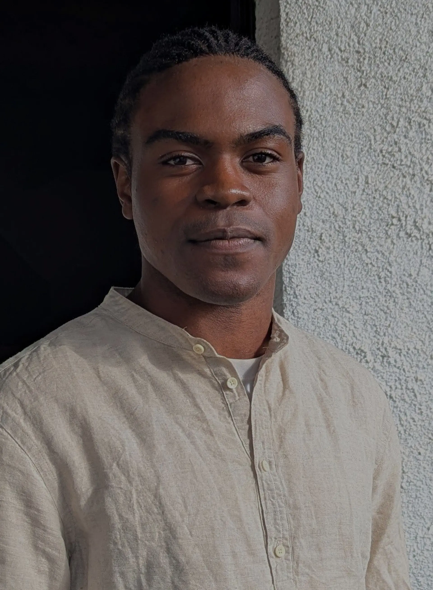

NOSAKHARE
"Hi my name is Nosakhare, welcome to my open codex. I seek to express visions beneath the clamor of a restless world. I have made a covenant to never betray the truth I find within this sacred endeavour"

"Hi my name is Nosakhare, welcome to my open codex. I seek to express visions beneath the clamor of a restless world. I have made a covenant to never betray the truth I find within this sacred endeavour"